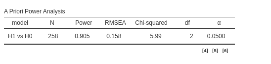

SEM power analysis
0.6.0
SEM power analysis enables the computation of power
parameters (such as required N and power) for a wide range of structural
equation models. It can be used to estimate power parameters based on
both chi-square constraints and Monte Carlo methods.
The module allows users to specify the prospective model using the syntax of the lavaan R package, with some modifications necessary to input the expected parameters. The results are partially obtained using the semPower R package, though several solutions are also implemented natively within the module.
Important
The capabilities (so far) of the module is to obtain power parameters associated with tests of single coefficients, or combinations of coefficients.
Input
The crucial aspect of the module usage is to input the expected model. One can start from a lavaan syntax model, such as
# latent variables
ind60 =~ x1 + x2 + x3
dem60 =~ y1 + y2 + y3 + y4
dem65 =~ y5 + y6 + y7 + y8
# regressions
dem60 ~ ind60
dem65 ~ ind60 + dem60
# residual correlations
y1 ~~ y5 To input the expected coefficients, one multiplies each variable for the associated coefficient
# latent variables
ind60 =~ .6*x1 + .6*x2 + .6*x3
dem60 =~ .8*y1 + .8*y2 + .8*y3 + .8*y4
dem65 =~ .8*y5 + .8*y6 + .8*y7 + .8*y8
# regressions
dem60 ~ .3*a*ind60
dem65 ~ .4*b*ind60 + .2*c*dem60
# residual correlations
y1 ~~ .1*y5 In this example, we specify that the latent variable
ind60 should have loadings equal to \(0.6\), and both the latent variables
dem60 and dem65 should have loadings equal to
\(0.9\). Additionally, the regression
coefficients for the latent variables are set to \(0.3\), \(0.4\), and \(0.2\), respectively. The scale of the
coefficients should be chosen under the assumption that all observed
variables are standardized.
Another requirement is to specify labels for the parameters we wish to test. In this example, we have labeled the three latent variables as \(a\), \(b\), and \(c\), respectively. This allows us to impose constraints on them and compute the required sample size (or power) to obtain a significant test (given a specified \(\alpha\)) for those particular coefficients or combinations of coefficients. This is achieved by constraining the coefficients to zero.
# latent variables
ind60 =~ .6*x1 + .6*x2 + .6*x3
dem60 =~ .8*y1 + .8*y2 + .8*y3 + .8*y4
dem65 =~ .8*y5 + .8*y6 + .8*y7 + .8*y8
# regressions
dem60 ~ .3*a*ind60
dem65 ~ .4*b*ind60 + .2*c*dem60
# residual correlations
y1 ~~ .1*y5
# tests
a == 0In this case, we are requesting the power parameter associated with
the coefficient \(a*ind60 = 0.3\). The
module will compute the required parameters to obtain a statistically
significant test by comparing two models: one where the coefficient of
ind60 is freely estimated and another where the coefficient
of ind60 is constrained to \(0\). In the module, this model looks like
this:
After checking the usual input values (Type I error, required power, etc)
Results
The main table reports the required N to achieve a statistically
significant result when testing the ind60 coefficient.
Additionally, we are provided with the path diagram to verify whether
the model aligns with our expectations. Admittedly, the path diagram may
appear a bit cluttered at times, but its purpose is solely to confirm
the model’s structure, not to look aesthetically pleasing.
Multiple tests
It is often the case that a researcher needs to test more than one coefficient in the same model. In our example, for instance, we may want to test both \(a\) and \(b\), meaning that the power results will depend on both coefficient tests. However, when multiple hypotheses are involved, it is important to carefully distinguish between omnibus tests and conjunction tests.
An omnibus test refers to a statistical test that encompasses more than one null hypothesis, yielding a significant result if any of the null hypotheses are rejected. In SEM terms, an omnibus test is significant if any of the coefficients are significantly different from zero. For example, in linear models, the omnibus test of \(R^2\) becomes significant if the explained variance is significantly different from zero, regardless of whether this variance is explained by one, two, or more terms in the model.
A conjunction test, on the other hand, refers to a statistical test that also encompasses multiple null hypotheses but yields a significant result only if all null hypotheses are rejected. In SEM terms, a conjunction test is significant only if all coefficients are significantly different from zero.
In PAMLj, both types of tests are available:
- Omnibus tests are specified by listing the coefficients to be tested, each with a separate constraint: \(p1==0\), \(p2==0\). In our example, assuming we want to test both \(a\) and \(b\), the code would look like this:
# latent variables
ind60 =~ .6*x1 + .6*x2 + .6*x3
dem60 =~ .8*y1 + .8*y2 + .8*y3 + .8*y4
dem65 =~ .8*y5 + .8*y6 + .8*y7 + .8*y8
# regressions
dem60 ~ .3*a*ind60
dem65 ~ .4*b*ind60 + .2*c*dem60
# residual correlations
y1 ~~ .1*y5
# tests
a == 0
b == 0This code computes the power parameters for testing that any coefficients among \(a\) and \(b\) is significant. As expected, the required N is smaller than in the previous example (where only \(a\) was tested), because it is easier —and thus more powerful — to detect any of two significant coefficients than to detect a specific one.
- Conjunction tests cannot not (yet) be specified in the syntax. However, one can obtain an estimation of power and required sample size by adding a multiplicative constraints, and constraining the smallest coefficient to zero. In our example, assuming we want to test both \(a\) and \(b\), the code would look like this:
# latent variables
ind60 =~ .6*x1 + .6*x2 + .6*x3
dem60 =~ .8*y1 + .8*y2 + .8*y3 + .8*y4
dem65 =~ .8*y5 + .8*y6 + .8*y7 + .8*y8
# regressions
dem60 ~ .3*a*ind60
dem65 ~ .4*b*ind60 + .2*c*dem60
# residual correlations
y1 ~~ .1*y5
# tests
a * b == 0
a == 0This code computes the power parameters for testing that both coefficients \(a\) and \(b\) are significant. Please note, however, that the power parameters obtained with this method are only an approximation of the actual population parameters. As expected, the required N is much larger than in the previous examples because it is more difficult—and thus requires more power—to detect both coefficients as significant compared to detecting just one or either of the two.

Options
| Main panel
Parameters
| Minimal desired power | Minimal desired power |
| FALSE | Sample size |
| Alpha (Type I rate) | Type I error rate (significance cut-off or alpha) |
| Tails | Two-tailed vs one-tailed test |
Model Method & Options
| Estimator |
Estimator method used in SEM. ML for Maximum Likelihood
|
| Standardized solution | Assume the observed variables are standardized (selected) or not (unselected) |
| Method |
Use Analytic methods for computation of power parameter or
Monte Carlo
|
| Test | Which test is used in Monte Carlo simulations: LRT or the Score test. |
| Explanatory text | Output some explanatory text of the results |
| Path diagram | Output the path diagram corresponding to the input model |
| Sensitivity Analysis panel
Sensitivity analysis, which explores different plots of possible parameter combinations, can be conducted as in any other PAMLj sub-module. Please visit the Sensitivity analysis page for more details. For the SEM sub-module, sensitivity analysis is available only for varying N values. When the Monte Carlo method is selected, sensitivity analysis is performed using the analytic method; otherwise, the computation time would be extremely long.
| Power Parameters plot panel
Another way to conduct sensitivity analysis in PAMLj, is to plot combinations of different parameters, choosing which parameters go in the Y-axis and the X-axis.
The advantage of Power Parameters plot over the other
plots produced by sensitivity analysis is that the user can choose the
range of values used for the X-axis (the From and
To field), and can break down the plot for different values
of a third parameter Plot Different Curves by
.
| Y-axis values |
Parameter in the Y-axis of custom power parameters plot. N,
Power or Effect Size.
|
| Show values | Add value labels to the custom power parameters plot. |
| Show table | Produce a table of the values plotted in custom power parameters plot |
| X-axis values |
Parameter in the X-axis of custom power parameters plot. N,
Power or Effect Size.
|
| From | Range for the parameter in the X-axis of custom power parameters plot. Starting value. |
| To | Range for the parameter in the X-axis of custom power parameters plot. Ending value. |
| Parameter |
break down the custom power parameters plot by a parameter.
N, Power, Type I error
(sig.level) or Effect size.
|
| Number of curves | Number of lines to plot |
| Options panel
Monte Carlo
| Parallel computation | Should parallel computing be used for the Monte Carlo method |
| Use a seed | Should we use a seed for the Monte Carlo method |
| Number of simulations | Number of repetitions for Monte Carlo method |
| Seed | What seed should we use for Monte Carlo method. Default is Life, the Universe and Everything |
Options
| Parallel computation | Should parallel computing be used for the Monte Carlo method |
| Use a seed | Should we use a seed for the Monte Carlo method |
Values
| Number of simulations | Number of repetitions for Monte Carlo method |
| Seed | What seed should we use for Monte Carlo method. Default is Life, the Universe and Everything |
Path Diagram
| Boxes size |
Size of the path diagram boxes: small, medium,
large
|
Model Check
| Implied Covariances | Output the implied variances-covariances of observed variables |
| Implied Latent Covariances | Output the implied variances-covariances of latent variables |
| Standardized regression | Output the implied standardized regression coefficients |
Return to main help pages
Main page
Comments?
Got comments, issues or spotted a bug? Please open an issue on PAMLj at github or send me an email